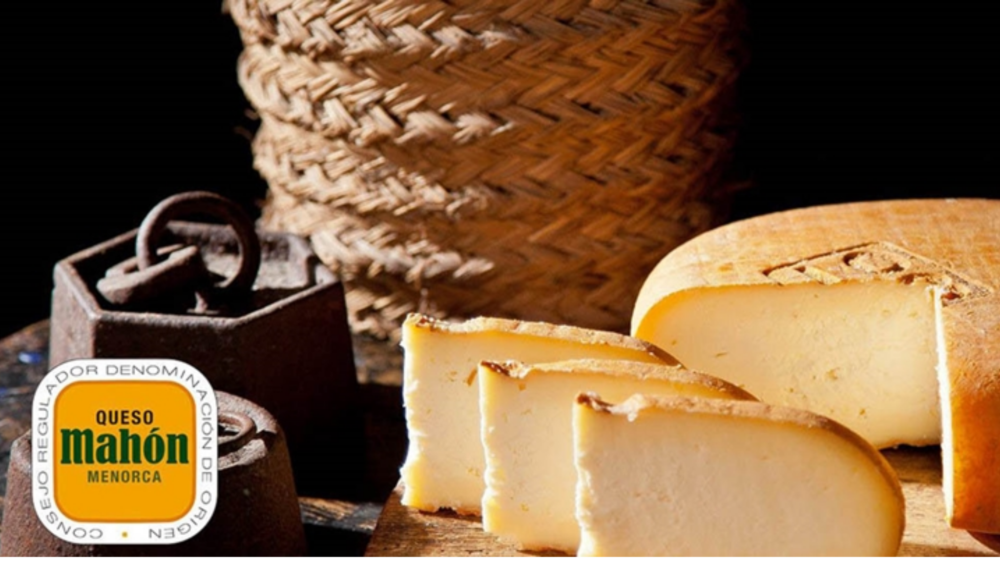

Qué comprar en Menorca: souvenirs originales que sí valen la pena

Cuando viajamos, todos queremos llevarnos un recuerdo que capture la esencia del lugar. Sin embargo, no todos los souvenirs cumplen esa función. Muchos turistas terminan comprando objetos genéricos, producidos en masa, que podrían encontrarse en cualquier destino. Si estás visitando Menorca y te preguntas qué comprar, aquí tienes una guía de souvenirs originales que realmente valen la pena.
Más allá del souvenir típico
En los últimos añnos, la forma de comprar recuerdos ha cambiado. Los viajeros ya no buscan solo objetos baratos, sino productos con historia, identidad y valor emocional. En Menorca, esto es especialmente importante, ya que la isla cuenta con una cultura rica y muy reconocible.
Elegir bien qué comprar en Menorca no solo significa llevarte un recuerdo bonito, sino también conectar con la tradición local y apoyar a pequeños productores.
Productos gastronómicos: sabor de la isla
Uno de los souvenirs más populares son los productos gastronómicos. El queso Mahón-Menorca es, sin duda, el protagonista. También destacan la sobrasada, la ginebra menorquina (gin) y otros productos locales.
Son una excelente opción si quieres compartir el viaje con familiares o amigos, aunque tienen el inconveniente de ser perecederos o más difíciles de transportar.

(Revista Frisona Española, “El queso Mahón-Menorca prevé iniciar este verano su recuperación económica”, 2021.)Artesanía tradicional: autenticidad menorquina
Las famosas abarcas menorquinas (sandalias de cuero) son otro clásico imprescindible. También puedes encontrar cerámica, bisutería artesanal y productos elaborados con materiales locales.
Estos souvenirs tienen un valor añadido: están hechos a mano y representan directamente la tradición de la isla.
Souvenirs originales: el valor de lo diferente
Si buscas algo realmente especial, lo ideal es apostar por souvenirs originales que combinen diseño y cultura local. Aquí es donde están ganado protagonismo nuestras propuestas: productos creativos inspirados en Menorca.
Por ejemplo, los peluches basados en elementos típicos de la isla - como animales autóctonos o productos tradicionales - se están convirtiendo en una alternativa moderna y muy atractiva. Son fáciles de transportar, tienen un componente emocional fuerte y funcionan tanto para niños como para adultos.
Este tipo de recuerdo conecta con una tendencia creciente: buscar objetos que no solo decoren, sino que cuenten una historia.
 (Abarcas Menorquinas, “Cómo cuidar tus sandalias menorquinas para que duren más”.)
(Abarcas Menorquinas, “Cómo cuidar tus sandalias menorquinas para que duren más”.)
¿Cómo elegir el souvenir perfecto?
Antes de comprar, hazte estas preguntas:
¿Representa realmente el lugar que he visitado?
¿Tiene algún valor cultural o emocional?
¿Es algo que no puedo encontrar en otro sitio?
Si la respuesta es sí, estás ante un buen souvenir.
Menorca es una isla con identidad propia, y sus souvenirs deberían reflejarlo. Ya sea a través de la gastronomía, la artesanía o propuestas más innovadores, lo importante es elegir un recuerdo que tenga significado.
Al final, el mejor souvenir no es el más barato ni el más típico, sino aquel que, cada vez que lo veas, te haga volver a ese momento del viaje.
Y en eso, Menorca tiene mucho que ofrecer.
VOLVER A BLOG